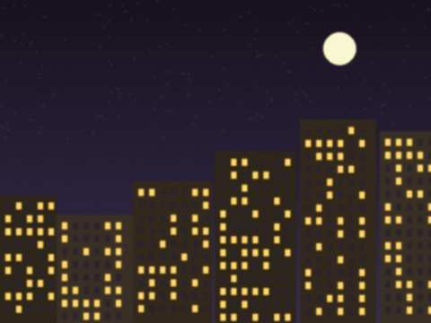

14.07.2007 22:10
mood: slow · music: Mor-Wave (very quiet)
the electricity comes at night for a bit. so i draw with a candle on the table and the pencil makes a big shadow on the paper, like another hand. Juju watches the pencil.

our window at 10 p.m. one candle and the whole city dark behind it.i dont want to write about the other things. i want to write that the drawing is going well.
02.06.2007 20:45
mood: better · music: Mor-Wave
school is over. we are all ok. i am going to draw ALL summer and not think about anything.
new drawing: a girl with a lantern on the Talas bridge. took me 4 days. the eyes are the best eyes i ever drew. i will scan it at the photo shop when i have money.
27.04.2007 23:55
mood: . · music: none
we are fine.
12.03.2007 20:40
mood: quiet · music: none
we have a new girl in our class, Zhanyl, from a village in Kara-Buura. there are 46 new kids in the whole school, they came in february. our class got three. she sits next to me because there was an empty place.
she doesn't talk much. she draws horses in the margin of the notebook. they are better than mine. i asked her if i can borrow her eraser and she said "of course" like it was a big thing. i dont know what to say to her so i said "your horses are good". she smiled. first time.
22.02.2007 01:10
mood: scared · music: none
cant sleep. everyone is talking about the north. papa is on the phone with uncle all night. meerim if you read this call me tomorrow